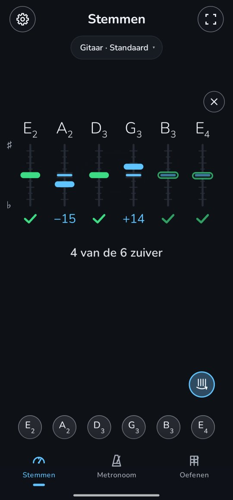

Strumcheck
Sla alle losse snaren één keer aan. Elke snaar laat tegelijk zien welke kant je hem op moet draaien. Eerst een snelle check, daarna stem je de snaren die ernaast zitten één voor één.
Alle snaren in één keer checken
- Tik op de stemmer op de strumknop boven de knoppen van de snaren, rechts. Op de plek van de lens staat voor elke snaar een kolom, in dezelfde volgorde als de knoppen eronder, en daaronder staat Strum alle losse snaren.
- Strum alle losse snaren, zonder er een in te drukken, en laat ze doorklinken.
- Na ongeveer een halve seconde laat elke kolom zijn snaar zien: een streepje op een korte schaal, omhoog voor te hoog en omlaag voor te laag, en daaronder hoeveel cent hij ernaast zit (−20, +15), een vinkje voor een zuivere snaar, of een streepje als Twangle hem niet hoorde.
- Onder de kolommen staat hoeveel er zuiver zijn, bijvoorbeeld 4 van de 6 zuiver, of Alle snaren zijn zuiver.
Stem daarna de snaren die ernaast zitten
Is de strum uitgeklonken, dan gaat de strumknop vanzelf uit en leest de stemmer weer één snaar tegelijk, in de kolommen. Speel gewoon een snaar die ernaast zit en stem hem: het streepje in zijn kolom beweegt mee terwijl je aan de stemknop draait, het woord zegt welke kant op, en is de snaar zuiver, dan krijgt hij zijn vinkje en loopt de telling op, 5 van de 6 zuiver. De andere kolommen houden de meting van de strum tot je die ook gestemd hebt, zodat je altijd ziet welke snaren nog over zijn.
Tik op de knop en strum wanneer je wilt opnieuw om het hele instrument nog eens te checken. Het kleine × boven de kolommen, of Terug, brengt de eigen lens van de stemmer terug.
Goed om te weten
- Strum stevig en laat de snaren doorklinken: het eerste, harde moment van een strum telt het zwaarst.
- Een hol, lichter streepje is minder zeker. In de standaardstemming zijn dat vaak de B en de hoge E: hun tonen vallen samen met deeltonen van de lage E, dus Twangle hoort ze minder duidelijk. Lijkt er een ernaast te zitten, speel hem dan apart: zijn kolom volgt de stemmer. Zolang een snaar minder zeker is, zegt de regel onder de telling dat ook: Tokkel de bleke snaren apart.
- Een strum rekent een snaar zuiver met dezelfde regel als de stemmer: binnen 5 cent, of 2 als Instellingen → Precies stemmen aan staat.
- Zonder de knop leest de stemmer één snaar tegelijk, ook als je strumt. Klonken er te weinig snaren in de strum, dan verschijnt er niets en blijft de knop aan: strum dan opnieuw. Tik er nog eens op om hem uit te zetten.
- De kolommen verdwijnen na een halve minuut zonder geluid, en als je een andere stemming kiest.
- Het werkt met je eigen stemming, welke ook, op elk instrument behalve de 12-snarige gitaar (de twaalf snaren klinken te dicht op elkaar om ze uit elkaar te houden), met de snaren van het instrument: niet bij Elke noot.
Voor wie het wil weten: zes snaren tegelijk horen
Waarom een knop? Alleen aan het geluid raden of je één snaar, een strum of een akkoord speelde, bleek onbetrouwbaar: een akkoord met vooral losse snaren, of een snaar die je aanslaat terwijl andere nog klinken, lijkt erg op een strum. Met de knop vertel je Twangle dat er een strum komt, dus leest het het volgende plotselinge geluid als strum.
Eén snaar is makkelijk: de golf herhaalt zich, en de tijd die dat duurt geeft de noot. In een strum liggen alle golven over elkaar heen. Maar een snaar klinkt niet als één toon: hij klinkt als een rij deeltonen op één, twee, drie, vier keer zijn toonhoogte. Twangle weet welke snaren je stemming heeft, dus zoekt het voor elke snaar in het spectrum van het geluid die rij deeltonen, vlak bij waar de snaar hoort te zitten, en meet precies waar ze liggen. Dat doet het op ongeveer een derde seconde geluid, tien keer per seconde zolang de snaren klinken, en het weegt de metingen naar hoe hard ze waren.
Sommige deeltonen van verschillende snaren vallen bijna op dezelfde toonhoogte. In de standaardstemming is de B-snaar bijna precies drie keer zo hoog als de lage E, en de hoge E vier keer, dus elke deeltoon van die twee is ook een deeltoon van de lage E. Waar twee snaren een deeltoon delen, leunt Twangle op de deeltonen die ze niet delen, en als die er niet zijn, leest het de gedeelde en noemt het de snaar minder zeker.
